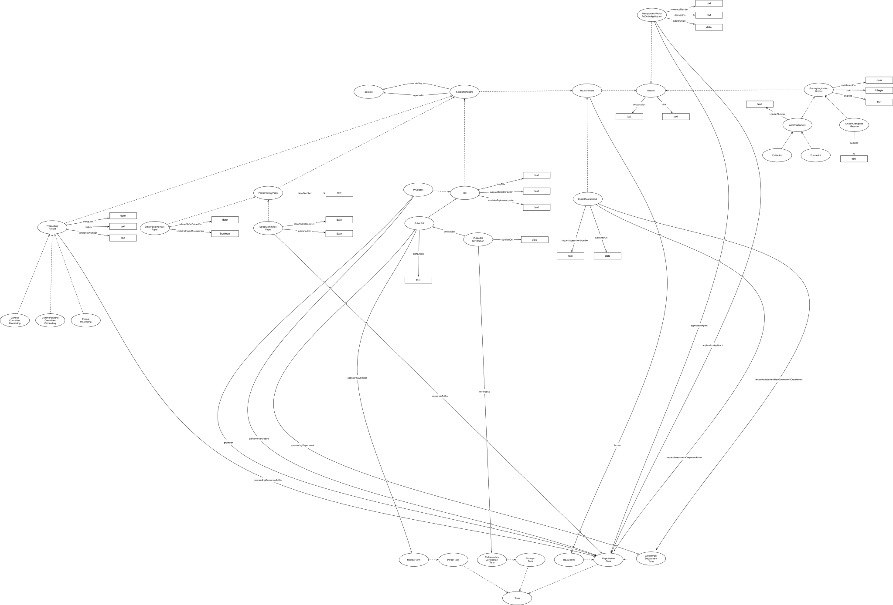

IRI: http://parliament.uk/ontologies/oasis/ActOfParliament
IRI: http://parliament.uk/ontologies/oasis/ConceptTerm
IRI: http://parliament.uk/ontologies/oasis/GovernmentDepartmentTerm
IRI: http://parliament.uk/ontologies/oasis/HouseRecord
IRI: http://parliament.uk/ontologies/oasis/HouseTerm
IRI: http://parliament.uk/ontologies/oasis/memberTerm
IRI: http://parliament.uk/ontologies/oasis/OrganisationTerm
IRI: http://parliament.uk/ontologies/oasis/ParliamentaryCertificationTerm
IRI: http://parliament.uk/ontologies/oasis/PersonTerm
IRI: http://parliament.uk/ontologies/oasis/PrimaryLegislationRecord
IRI: http://parliament.uk/ontologies/oasis/PrivateAct
IRI: http://parliament.uk/ontologies/oasis/PublicAct
IRI: http://parliament.uk/ontologies/oasis/Record
IRI: http://parliament.uk/ontologies/oasis/SessionalRecord
IRI: http://parliament.uk/ontologies/oasis/Term
IRI: http://parliament.uk/ontologies/oasis/house
IRI: http://parliament.uk/ontologies/oasis/title
IRI: http://parliament.uk/ontologies/oasis/webLocation
This HTML document was obtained by processing the OWL ontology source code through LODE, Live OWL Documentation Environment, developed by Silvio Peroni.